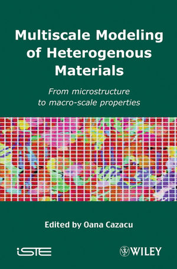
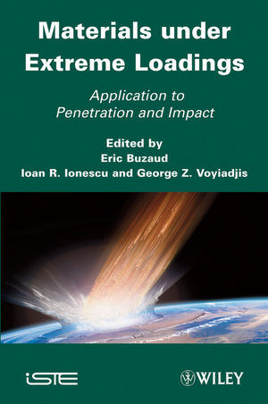
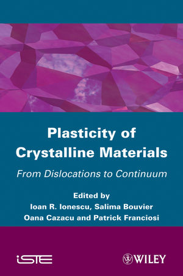
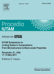
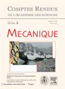
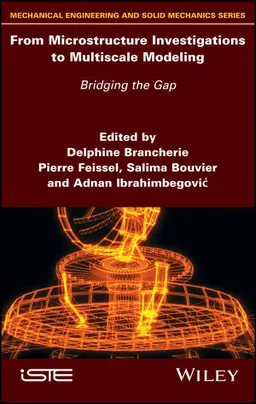
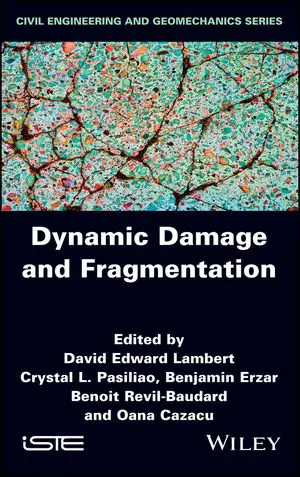
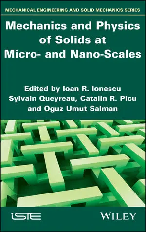

Multiscale Modeling of Heterogeneous Materials: From Microstructure to Macro-Scale Properties
Wiley-ISTE, 2008, Edited by Oana Cazacu
ISBN: 978-1-84821-047-9


Multiscale Modeling of Heterogeneous Materials: From Microstructure to Macro-Scale Properties
Wiley-ISTE, 2008, Edited by Oana Cazacu
ISBN: 978-1-84821-047-9

Materials under Extreme Loadings: Application to Penetration and Impact
Wiley-ISTE, 2010, Edited by Georges Voyiadjis, Eric Buzaud and Ioan R. Ionescu
ISBN: 978-1-84821-184-1

Plasticity of Crystalline Materials: from Dislocations to Continuum
Wiley-ISTE, 2011, Edited by Ioan R. Ionescu, Salima Bouvier, Oana Cazacu and Patrick Franciosi
ISBN: 978-1-84821-278-7

Linking scales in computation: from microscale to macroscopic properties
Procedia Iutam, Vol. 3, 2012, Edited by Oana Cazacu
Open Access

Mechanics of granular and polycrystalline solids
Thematic issue of Comptes Rendus de l'Academie des Sciences, Edited by Francois Nicot and Felix Darve
Volume 343, Issue 2, February 2015

From Microstructure Investigations to Multiscale Modeling: Bridging the Gap
Wiley-ISTE, 2017, Edited by Delphine Blancherie, Pierre Feissel, Salima Bouvier and Adnan Ibrahimbegovic
Publication link

Dynamic Damage and Fragmentation
Wiley-ISTE, 2019, Edited by David Lambert, Crystal Pasiliao, Benjamin Erzar, Benoit Revil-Baudard and Oana Cazacu
Publication link

Mechanics and Physics of Solids at Micro- and Nano-Scales
Wiley-ISTE, 2020, Edited by Ioan R. Ionescu, Sylvain Queyreau , Catalin R. Picu and Oguz Umut Salman
Publication link